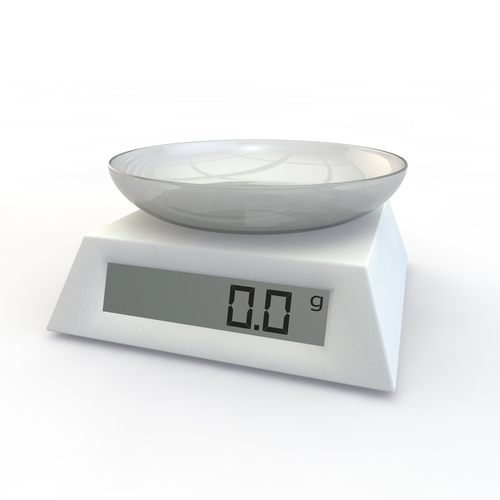
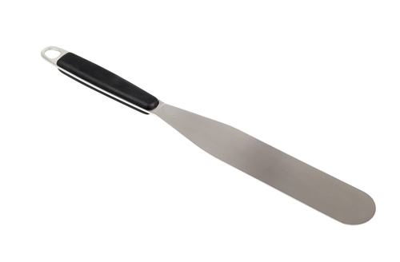

Task 2: Techniques and Equipment
Further instructions here to be confirmed.
Further instructions here to be confirmed.
There are many methods used in making biscuits, cakes and sponges. Some examples are:
The flour batter method employs whisking to combine the eggs and sugar to form a foam. Other ingredients are then added to this mix.
Whisking is also used to make a smooth paste for almond biscuits.
A traditional method still in use is the creaming method.
This is used when the fat and sugar are creamed together then beaten, eggs are added followed by flour.
An example that employs this method is a Victoria sponge.
Folding is the technique used to incorporate an ingredient with others that have already been aerated.
An example of this is the folding in of the flour when making Swiss rolls or madeleines.
Techniques such as piping must be carried out correctly using the correct equipment such as nozzles and piping bags.
Piping is used to create sponge fingers and cats’ tongues. It is also an essential skill in the decoration of biscuits, cakes and sponges.
Rolling is used to make an even thickness when producing biscuits and cakes to a required thickness.
Examples that employ this method include scones and shortbreads.
Beating is used in all varieties of biscuits, cakes and sponges.
Beating is used to incorporate ingredients when making products such as cookies and sablés biscuits.
Sieving is essential if a light sponge is required and ensures that any impurities are removed from the flour.
Some examples that use this method are cup cakes, Victoria sponge and scones.
Lining is used to stop a cake mix, such as a Genoise, sticking to the cake mould or tin.
It may also be used in combination with an oil/fat to prevent the mix sticking.
Lining can be used when making a Swiss roll and also cup cakes.
Aeration is used to create air within a cake or sponge. It is used in the foaming process for sponge fingers. Aeration is achieved by whisking the ingredients for considerably longer than just mixing, until the volume increases due to the air being introduced.
This method is also used when making creams for decoration of cakes and sponges.
A depositing machine is used in bakeries to fill moulds and cases with a filling.
Using a depositing machine ensures a consistency of portion size and efficiency in the workplace.
Depositing machines are also used to finish products with a covering such as icing.
Biscuits, cakes and sponges use a wide variety of kitchen equipment in the preparation and cooking of the products. Some of this equipment is specifically required and includes:
There are many different types of ovens now available, such as:
There are a wide variety of mixers available to the chef, including handheld and industrial-sized machines.
Food processors are also available in most modern kitchens and allow the chef to work efficiently.
Silpat mats are specialised mats that can be re-used to prevent items from sticking whilst cooking. They are made from silicone rubber.
Stencils are used to make precisely shaped products such as tuile biscuits and for the dusting of cakes to create a pattern.
Other equipment available in the preparation and cooking of biscuits, cakes and sponges includes:
|  |  |
Storage of prepared ingredients for biscuits, cakes and sponges is vital for the safety of your customer. Food safety and hygiene regulations must be complied with at all times. The following must always be considered:
The following needs to be considered for all biscuits, cakes and sponges:
When labelling any biscuits, cakes and sponges the following guidelines should be followed:
| Product: |
| Date: |
| Use by: |
Ideally any biscuits, cakes and sponges being stored should be in an airtight container. However other coverings include:
When storing any biscuits, cakes and sponges you must always consider the possibility of cross-contamination. All products, especially high risk ones where no further cooking is required, should be:
Specifically when storing biscuits, cakes and sponges the following guidelines should be followed:
You have now reached the end of this unit and are ready to progress to the quiz. You can do this by clicking on the tabs below. Remember that you can revisit this unit to revise at any time.